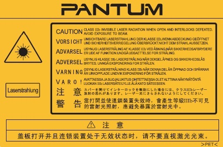
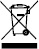
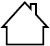

Prefazione
Benvenuti nei prodotti della serie Pantum!
Siamo veramente lieti della vostra decisione di utilizzare i prodotti della serie Pantum.
Nell'interesse del cliente, si consiglia di leggere attentamente quanto segue.
Avviso legale
Marchio
Pantum e il logo Pantum sono marchi registrati di Zhuhai Pantum Electronics Co.,Ltd.
Microsoft®, Windows®, Windows Server® e Windows Vista® sono marchi registrati di Microsoft Corporation negli Stati Uniti e in altri Paesi/regioni.
I nomi dei prodotti software citati nella presente Guida per l'utente appartengono alle rispettive aziende proprietarie secondo il corrispondente accordo di licenza e i riferimenti a essi sono intesi solo come istruzioni.
Tutti gli altri nomi di prodotti e di marchi qui citati possono essere marchi registrati, marchi commerciali o marchi di assistenza dei rispettivi proprietari e i riferimenti a essi sono intesi solo come istruzioni.
Copyright
Il copyright di questa Guida per l'utente è di Zhuhai Pantum Electronics Co.,Ltd.
Sono vietate la copia, la traduzione, la modifica e la trasmissione della presente Guida per l'utente, con qualunque mezzo e in qualunque forma, senza il previo consenso scritto di Zhuhai Pantum Electronics Co.,Ltd.
Versione: V1.5
Liberatoria
Per offrire una migliore esperienza all'utente, Zhuhai Pantum Electronics Co.,Ltd. si riserva il diritto di apportare modifiche alla presente Guida per l'utente. Le informazioni contenute nella presente sono soggette a modifica senza preavviso.
Gli eventuali danni originati dalla mancata osservanza delle indicazioni riportate nella Guida sono di responsabilità degli utenti. Peraltro, fatta salva la garanzia esplicita riportata nel manuale di manutenzione del prodotto o nel contratto di assistenza, Zhuhai Pantum Electronics Co.,Ltd. non propone alcuna garanzia espressa o implicita neppure per quanto riguarda la presente Guida per l'utente (incluse la composizione e le parole).
L'uso di questo prodotto per copiare, stampare, sottoporre a scansione determinati documenti o immagini oppure effettuare operazioni di altro tipo può essere vietato dalle leggi locali. In caso di dubbi in merito alla legalità dell'utilizzo di questo prodotto per determinati documenti o immagini, contattare prima il proprio consulente legale.
Il prodotto può essere utilizzato in modo sicuro esclusivamente nelle aree non tropicali situate a non più di 2000 metri sopra il livello del mare.
Precauzioni di sicurezza
Scollegare l'alimentazione elettrica
Il prodotto deve essere posizionato vicino o in posizione facilmente accessibile alle prese di corrente, in modo da consentire una facile disconnessione dell'alimentazione!
Sicurezza del laser
La radiazione laser è nociva per l'organismo umano. Poiché le componenti laser sono completamente sigillate all'interno della stampante, la radiazione laser non può uscirne. Per evitare radiazioni laser, non smontare la stampante in modo trascurato.
La stampante è conforme alle disposizioni per i prodotti laser di classe 1 in base allo standard CFR. La stampante dispone di un diodo laser di classe III b, che non consente fuoriuscite di radiazioni laser tra i componenti.
Ai componenti laser all'interno della stampante è applicata la seguente etichetta:

Rigenerazione e riciclaggio
Per proteggere l'ambiente, la nostra società ha stabilito un sistema di recupero e riciclo dei prodotti di scarto. I riferimenti per il recupero dei prodotti sono presenti sul sito web ufficiale di Pantum www.pantum.com.
Avvertenza di sicurezza
Prendere nota delle seguenti avvertenze di sicurezza prima di utilizzare la stampante.
Precauzioni
Precauzioni prima dell’utilizzo della stampante:
1. Leggere e comprendere tutte le istruzioni.
2. Familiarizzare con i principi di base associati alla gestione delle apparecchiature elettriche.
3. Rispettare tutti gli avvertimenti e le istruzioni indicati sulle apparecchiature o specificati nel manuale in dotazione.
4. Se le istruzioni di funzionamento sono in conflitto con le informazioni di sicurezza, prevalgono queste ultime; l'utente potrebbe aver interpretato in maniera errata le istruzioni operative. Qualora non fosse possibile risolvere i conflitti, contattare l'hotline di servizio clienti o un addetto per ricevere assistenza.
5. Prima di pulire l'apparecchiatura, rimuovere il cavo di alimentazione dalla presa di alimentazione CA. Non utilizzare detergenti liquidi o spray.
6. Assicurarsi che l'apparecchiatura sia collocata su una superficie di lavoro stabile al fine di evitare danni gravi causati dalla caduta del dispositivo.
7. Non collocare l'apparecchiatura accanto a radiatori, condizionatori d'aria o tubi di aerazione.
8. Non posare oggetti sul cavo di alimentazione. Evitare di posizionare l’apparecchiatura in luoghi in cui il cavo di alimentazione possa essere calpestato.
9. Le prese e i cavi di prolunga non devono essere sovraccaricati per evitare di compromettere le prestazioni e di causare un incendio o scosse elettriche.
10. Evitare che animali domestici danneggino con i denti il cavo di alimentazione CA o il cavo di interfaccia del computer.
11. Non perforare il vano dell'apparecchiatura con oggetti appuntiti, in modo da evitare il contatto con il dispositivo ad alta tensione, che potrebbe causare incendi o scosse elettriche. Prestare attenzione a non rovesciare liquidi sull'apparecchiatura.
12. Non smontare l'apparecchiatura per evitare rischi di scosse elettriche. Le riparazioni devono essere eseguite soltanto da personale addetto alla manutenzione professionale. L'apertura o la rimozione del coperchio può provocare scosse elettriche o altri pericoli. Montaggio e smontaggio scorretti possono causare scosse elettriche durante gli utilizzi successivi.
13. Qualora si verifichi una delle seguenti situazioni, scollegare l'apparecchiatura dal computer e rimuovere il cavo di alimentazione dalla presa a muro CA, quindi contattare un membro qualificato del personale di assistenza addetto alla manutenzione:
• si è rovesciato del liquido all'interno dell'apparecchiatura;
• l'apparecchiatura è stata esposta alla pioggia o all'acqua;
• l'apparecchiatura è caduta o il coperchio è danneggiato;
• si sono verificati cambiamenti significativi nelle prestazioni dell'apparecchiatura.
14. Regolare unicamente i controlli indicati nelle istruzioni. Un'errata regolazione degli altri controlli può causare danni e la loro correzione può richiedere più tempo al personale professionale addetto alla manutenzione.
15. Non utilizzare l'apparecchiatura durante un temporale per evitare il rischio di scosse elettriche. Se possibile, scollegare il cavo di alimentazione CA durante il temporale.
16. Nello stampare diverse pagine multiple, la superficie del vassoio può diventare molto calda. Prestare attenzione a non toccare la superficie e tenere i bambini lontano da essa.
17. Il cavo segnale del dispositivo collegato alla stampante non può essere collegato all'aperto.
18. In caso di uso prolungato o di stampa di grandi quantità di documenti in un luogo poco aerato, assicurarsi di aerare opportunamente la stanza.
19. Quando è in standby e non riceve richieste da un certo periodo di tempo (circa 1 minuto), il prodotto avvia automaticamente la modalità di risparmio energetico (sospensione); può raggiungere un consumo energetico pari a zero solo se non è stato collegato ad alimentatori esterni.
20. Essendo un'apparecchiatura di classe 1, il prodotto deve essere collegato a una presa di alimentazione con messa a terra di protezione durante l'utilizzo.
21. In fase di consegna, il prodotto deve essere posizionato secondo i segni di spedizione sulla scatola dell'imballo.
22. Il prodotto è un'apparecchiatura del tipo a bassa tensione. Se si utilizza il prodotto al di sotto dell'intervallo di tensione specificato, fare riferimento alle precauzioni relative al prodotto o chiamare il Centro di assistenza post-vendita Pantum, se il toner si stacca dal materiale stampato o se l'apparecchiatura è lenta all'avvio.
23. Questo prodotto è venduto come macchina completa. I consumatori possono rivolgersi al Centro di assistenza post-vendita Pantum per acquistare i componenti necessari. Se il prodotto venduto non è conforme all'elenco della confezione, rivolgersi al Centro di assistenza post-vendita Pantum per la risoluzione del problema.
24. Installare il prodotto in un luogo con temperatura compresa tra 10 °C e 32,5 °C e umidità relativa compresa tra il 20% e l’80%.
25. Per ragioni di sicurezza e altri motivi la stampante può passare alla stampa intermittente dopo una certa quantità di stampa continua.
26. Conservare questa Guida per l'utente correttamente.
Informazioni sulle normative
|

|
Questo simbolo indica che, al termine della vita utile, il prodotto non dovrà essere smaltito insieme ai rifiuti domestici. Occorre invece smaltire l'attrezzatura in un punto di raccolta per il riciclaggio dei rifiuti di apparecchiature elettriche ed elettroniche. Rif.: Direttiva UE 2002/96/CE sui rifiuti relativi alle apparecchiature elettriche ed elettroniche (RAEE). Per ulteriori informazioni, contattare il distributore o il fornitore.
|
|

|
Prodotto destinato al solo uso domestico.
|
|
|
Conformità con le direttive della Comunità europea (CE)
Questo prodotto è conforme ai requisiti di protezione delle direttive CE 2014/30/EU e 2014/35/EU circa l'approssimazione e l'armonizzazione delle legislazioni degli Stati membri relative alla compatibilità elettromagnetica e di sicurezza delle apparecchiature elettriche destinate all'uso entro determinati limiti di tensione.
Produttore: Zhuhai Pantum Electronics Co.,Ltd., No.3883, Zhuhai Avenue, Zhuhai, Guangdong, China 519060.
Una dichiarazione di conformità ai requisiti delle direttive è disponibile su richiesta presso il rappresentante autorizzato.
Questo prodotto è conforme ai limiti di Classe B delle norme EN 55032 e ai requisiti di sicurezza EN 60950.
|
|
|
Questa stampante è pienamente conforme alla direttiva ROHS 2009/95/CE e ai requisiti della direttiva 2011/65/UE aggiornata per l'uso di determinate sostanze pericolose e tossiche.
|
|
SVHC （Substances of Very High Concern）content stated in REACH Regulation: Battery built in the equipment with faxing feature contains SVHC including: 1,2-dimethoxyethane;ethylene glycol dimethyl ether (EGDME) with concentration of 0.707%. |